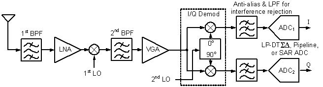
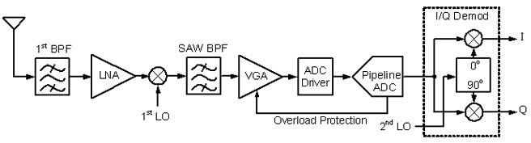
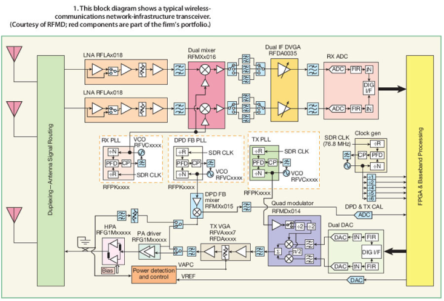
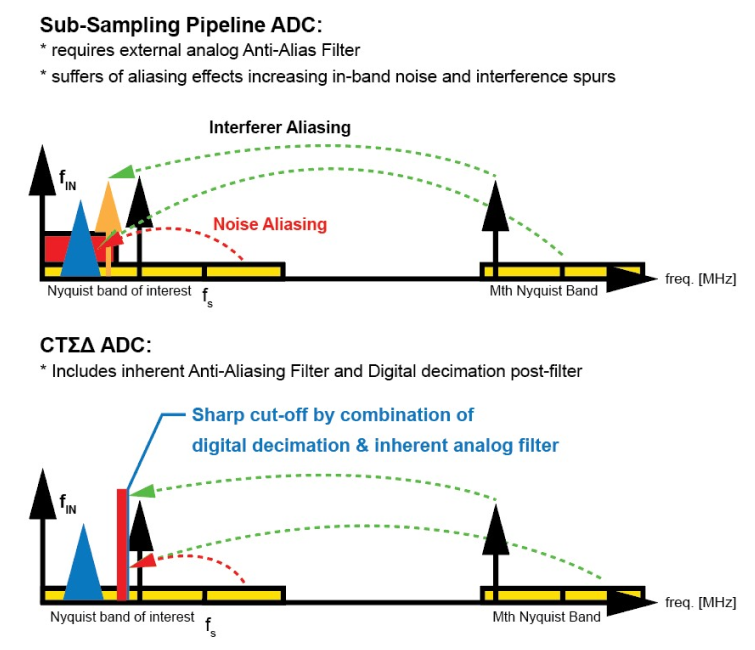
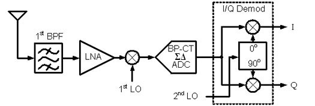

The current Receiver architecture in the Wireless Base station is predominantly an adapted heterodyne architecture. The second mixer stage (intermediate frequency to baseband) of this architecture is replaced by a pipelined analog-to-digital converter (ADC) which is operated in sub-sampling meaning the sampling rate of this converter is reasonably smaller than the input frequency of the ADC. The Nyquist criteria are met since the band of interest is located around the IF (intermediate frequency is equal input frequency of pipeline ADC) and is much smaller than the IF. This way one can select one of the higher-order Nyquist bands (e.g. the 10th or 16th) for digitalization by using an ADC with just exactly 1x Nyquist bandwidth.
Superheterodyne IQ receivers with pipeline, or SAR (successive approximation) low-pass ADCs mostly applied in consumer smartphones, (LNA = low noise amplifier, VGA = variable gain amplifier, LO = local oscillator, BPF = passive bandpass filter).
Heterodyne IF receiver utilizing wide-band Pipeline ADC applied in base stations (2nd mixer already in the digital domain).
Block diagram of LTE (4G) Base station revealing the heterodyne downconverter architecture with a pipeline ADC in sub-sampling mode.Courtesy of RF-Microdevices / QORVO, Janine Love (Aug. 2011)
The sub-sampling process is moving all signals at the input into the Nyquist band of the output sampling rate. Therefore high order analog filtering is necessary prior to the sub-sampling ADC converter – anti-aliasing filtering. These analog RF filters – mechanical SAW filters – have in-band attenuation and have therefore to be combined with amplifier stages (VGA) to compensate for the in-band attenuation (loss). Additionally to that, the input stage of the sub-sampling converter itself has to have a noise level which takes into account that due to the sub-sampling the noise level of the input stage is increased by the sub-sampling process.
The sampling input network of the pipeline / SAR ADC is difficult to drive for the preceding amplifier stage since the sampling capacitors of the pipeline input stage have to be charged within the sampling period according to the resolution of the ADC (e.g. 16bit 5GS/s ADC with 5pF => sampling settling to 16bit accuracy within 0,2ns corresponds 11,8*τ= 11,8*R*C results in 3,4 Ω max. switch resistance over whole voltage swing for all corners).
The sampling process at the input of the pipeline ADC is a technological barrier to the implementation of pipeline ADCs with high signal bandwidth (more than 200MHz) and high resolution (14 ENOB) even in modern nanometer CMOS technologies. The higher bandwidth increases the sampling frequency of the pipelined converter and reduces the settling period for the sampling process. Additionally, the demand for higher ADC resolution increases the settling accuracy which is effective in a further reduction of the settling period. The progress in CMOS process technology speed and the development of process technology with small feature sizes (FinFET) can not overcome this technical limit. The reason is that the analog-to-digital conversion of the continuous-time (CT) analog signal into a discrete-time (DT) signal happens at the input of the pipeline ADC. Therefore the necessary resolution of this process has to be the same as the target resolution of the ADC. Due to the nature of the sampling process, the time constants needed are much higher than the input signal frequencies. Although the CMOS process technology decreased the minimum feature size from 130nm to 3nm in the last 20 years or from 32nm to 3nm in the last 10 years, the resolution and bandwidth of pipeline / SAR ADC did not improve in the same way as needed for example in wireless and radar / Lidar receivers.
The market for base station receiver demand since 2005 analog to digital converters with higher bandwidth and resolution as the pipeline ADC can offer. This demand can not be satisfied by the current receiver architecture and the current available ADC converters. Due to the further increasing demand for high bandwidth and resolution in base station (BTS) receivers, a change of receiver architecture and ADC architecture is mandatory and will lead to a big step in the evolution of receiver architectures.
All the limitations which hinder increasing bandwidth and resolution of the receiver are related to the sampling and down-conversion process of the pipelined converter. This process offers flexibility in down conversion but is very inefficient regarding speed and resolution. To make things worse it can not really benefit from modern process technologies with small feature sizes. Therefore the next evolution of receiver architecture is to digitize the signal first and do the down-mixing process in the digital domain, where it can be done with theoretically unlimited resolution and accuracy. To avoid sampling at the input the signal is digitized with a continuous time bandpass sigma-delta (CTSD) converter which performs the sampling and digitizing after a series of analog gain stages, therefore the sampling error is shaped in the frequency domain and filtered out by the digital post-processing (digital decimation filter: E.Hogenauer 1981, R.Crochiere, L. Rabiner 1975, R.Crochiere, L. Rabiner 1981, B.Brandt, B. Wooley 1994 .)
